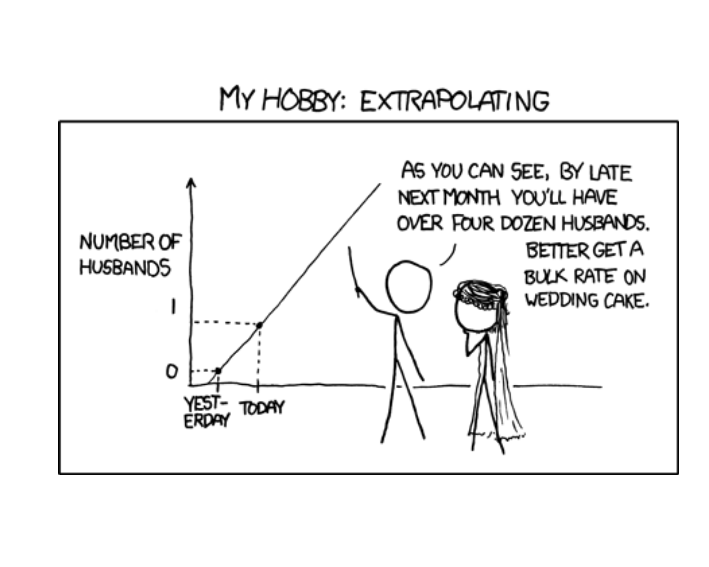
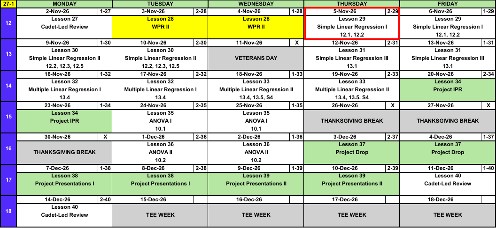
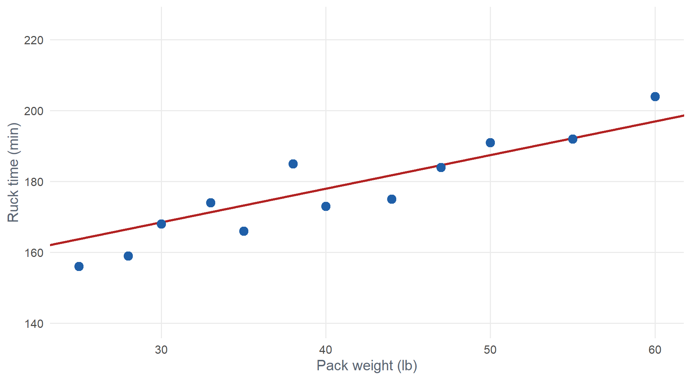
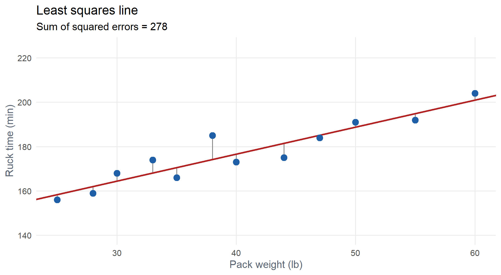

Lesson 29: Simple Linear Regression I
Calendar

Admin
- Project partners: Select your project partner
What We Did: Block II
NoteReview: Statistical Inference (Lessons 18 to 26)
- CLT: \(\bar{X} \sim N\left(\mu,\ \left(\dfrac{\sigma}{\sqrt{n}}\right)^2\right)\), approximately, for \(n > 40\)
- Confidence interval: \(\text{estimate} \pm \text{critical value} \times \text{standard error}\)
- Six steps: hypotheses, conditions, test statistic, P-value, decision, conclusion
- One group: \(z\) or \(t\) for \(\mu\), \(z\) for \(p\)
- Two groups: two-sample \(t\) for \(\mu_1 - \mu_2\), paired \(t\) for \(\mu_D\), two-proportion \(z\) for \(p_1 - p_2\)
Block III: Regression and the Analysis of Variance
- Block II: is there an effect? How big is it?
- Block III: can we predict one variable from another?
- Today: one numeric \(x\), a straight line.
What We’re Doing: Lesson 29
Objectives
- State the simple linear regression model \(Y = \beta_0 + \beta_1 x + \varepsilon\) and its assumptions. (SLO 4)
- Estimate \(\beta_0\) and \(\beta_1\) by least squares and interpret the estimated regression line. (SLO 4)
Required Reading
Devore 12.1, 12.2
The Takeaway for Today
NoteKey Concepts from Lesson 29
- Model: \(Y = \beta_0 + \beta_1 x + \varepsilon\), \(\varepsilon \sim N(0, \sigma^2)\)
- Least squares: choose \(\hat{\beta}_0\), \(\hat{\beta}_1\) to minimize \(\sum (y_i - \hat{y}_i)^2\)
- \(\hat{\beta}_1 = \dfrac{S_{xy}}{S_{xx}}\), \(\hat{\beta}_0 = \bar{y} - \hat{\beta}_1\bar{x}\)
- Slope: change in the mean of \(y\) for a one unit increase in \(x\)
- Predict only inside the range of the \(x\) data
Scatterplots
Does pack weight slow cadets down? Twelve cadets each rucked 12 miles with a different pack weight.
| Cadet | 1 | 2 | 3 | 4 | 5 | 6 | 7 | 8 | 9 | 10 | 11 | 12 |
|---|---|---|---|---|---|---|---|---|---|---|---|---|
| Weight \(x\) (lb) | 25 | 28 | 30 | 33 | 35 | 38 | 40 | 44 | 47 | 50 | 55 | 60 |
| Time \(y\) (min) | 156 | 159 | 168 | 174 | 166 | 185 | 173 | 175 | 184 | 191 | 192 | 204 |

- Response \(y\): ruck time, vertical axis. Explanatory \(x\): pack weight, horizontal axis.
- Direction: positive
- Form: roughly linear
- Strength: fairly strong
- Unusual observations: none
How Can We Model This?
We could use our eyeball to estimate a line through the data.

Is this line any good? Is there a better one?
Which Line Is Best?

How Can We Get the Best Line?
For each point, measure the error: how far the point is from the line.

Each grey line is an error (residual): \(e_i = y_i - \hat{y}_i\).
Minimizing the Error
The best line makes these errors as small as possible.
- Fitted line: \(\hat{y}_i = \hat{\beta}_0 + \hat{\beta}_1 x_i\)
- Error: \(e_i = y_i - \hat{y}_i\)
- Positive and negative errors cancel, so square them: \(e_i^2 = (y_i - \hat{y}_i)^2\)
- Add them up:
\[\text{SSE} = \sum_{i=1}^{n} (y_i - \hat{y}_i)^2 = \sum_{i=1}^{n} \left(y_i - \hat{\beta}_0 - \hat{\beta}_1 x_i\right)^2\]
The least squares line chooses \(\hat{\beta}_0\) and \(\hat{\beta}_1\) to minimize SSE.
ImportantLeast Squares Estimates
\[S_{xx} = \sum (x_i - \bar{x})^2, \qquad S_{xy} = \sum (x_i - \bar{x})(y_i - \bar{y})\]
\[\hat{\beta}_1 = \frac{S_{xy}}{S_{xx}}, \qquad \hat{\beta}_0 = \bar{y} - \hat{\beta}_1 \bar{x}\]
The Model
ImportantSimple Linear Regression Model
\[Y = \beta_0 + \beta_1 x + \varepsilon, \qquad \varepsilon \sim N(0, \sigma^2)\]
- \(\beta_0\), \(\beta_1\): true intercept and slope, parameters. \(\hat{\beta}_0\), \(\hat{\beta}_1\): their least squares estimates.
- True regression line: \(\mu_{Y \cdot x} = \beta_0 + \beta_1 x\), the mean of \(Y\) at a given \(x\)
- Linear: the mean of \(Y\) is a straight line in \(x\)
- Independent: the errors \(\varepsilon_i\) are independent
- Normal: the errors are normally distributed
- Equal variance: \(\sigma^2\) is the same at every \(x\)
Fitting a Regression in R
ruck <- data.frame(
weight = c(25, 28, 30, 33, 35, 38, 40, 44, 47, 50, 55, 60),
time = c(156, 159, 168, 174, 166, 185, 173, 175, 184, 191, 192, 204)
)
model <- lm(time ~ weight, data = ruck)
summary(model)
Call:
lm(formula = time ~ weight, data = ruck)
Residuals:
Min 1Q Median 3Q Max
-6.614 -3.282 -1.871 3.034 10.693
Coefficients:
Estimate Std. Error t value Pr(>|t|)
(Intercept) 128.0279 6.0311 21.228 1.20e-09 ***
weight 1.2179 0.1444 8.435 7.39e-06 ***
---
Signif. codes: 0 '***' 0.001 '**' 0.01 '*' 0.05 '.' 0.1 ' ' 1
Residual standard error: 5.275 on 10 degrees of freedom
Multiple R-squared: 0.8768, Adjusted R-squared: 0.8644
F-statistic: 71.14 on 1 and 10 DF, p-value: 7.386e-06Interpreting the Output
\[\widehat{\text{time}} = 128.03 + 1.22\,(\text{weight})\]
ImportantInterpreting Slope and Intercept
Slope (\(\hat{\beta}_1 = 1.22\)): for each additional pound of pack weight, the estimated mean 12 mile ruck time increases by 1.22 minutes.
Intercept (\(\hat{\beta}_0 = 128.03\)): the estimated mean ruck time with a 0 lb pack is 128.03 minutes. Not meaningful: 0 lb is outside the data (25 to 60 lb).
There is a P-value at the end of each row. Where there’s a P-value, there’s a hypothesis test.
NoteHypothesis Tests in the Output
Slope: is there a linear relationship between \(x\) and \(y\)?
\[H_0: \beta_1 = 0 \qquad H_a: \beta_1 \neq 0\]
\(t = 8.43\), P-value \(= 7.39 \times 10^{-6}\). Reject \(H_0\): pack weight is a useful predictor of ruck time.
Intercept: is the true intercept different from zero?
\[H_0: \beta_0 = 0 \qquad H_a: \beta_0 \neq 0\]
\(t = 21.23\), P-value \(= 1.20 \times 10^{-9}\). Usually not of interest.
The slope test is the one we care about. Fail to reject \(H_0: \beta_1 = 0\) means \(x\) is not a useful linear predictor of \(y\). More next lesson.
WarningContext Matters
- Interpret the slope with units and context. “The slope is 1.22” is not enough.
- If \(x = 0\) is outside the data, the intercept may not be meaningful. Say so.
Visualizing the Fit

No line has a smaller sum of squared errors. “Not bad” was 390.
Making Predictions
Predict the mean ruck time for a 45 lb pack:
\[\widehat{\text{time}} = 128.03 + 1.22(45) = \mathbf{182.83} \text{ minutes}\]
predict(model, newdata = data.frame(weight = 45)) 1
182.8319
WarningInterpolation vs. Extrapolation
- Interpolation: predicting inside the observed \(x\) range (25 to 60 lb). Fine.
- Extrapolation: predicting outside it. Dangerous: the line may not continue. See today’s comic.
- 45 lb is interpolation. 100 lb would be extrapolation.
Let’s Go to Vantage!
# MA206 Exploratory Data Analysis: Brigade Readiness
library(tidyverse)
library(foundry)
# Read the full AY27-1 readiness dataset from Foundry.
master <- datasets.read_table("ay27_1_master")
# Select the brigade used in the EDA report.
MY_BRIGADE <- "20TH ENGINEER BRIGADE"
bde <- master |>
filter(BrigadeName == MY_BRIGADE) |>
select(age, time_in_active_service_years, skill_level, height, weight, aft_score_total) |>
filter(!is.na(aft_score_total))
# Create model
mod <- lm(weight~height, data = bde)
summary(mod)Project Partners
Board Problems
Problem 1: ACFT and Sleep
For a random sample of cadets, average nightly sleep \(x\) (hours, observed from 4 to 9) and ACFT score \(y\) give the fitted line
\[\hat{y} = 380 + 12.5x\]
NoteQuestions
Identify the explanatory and response variables.
Interpret the slope in context.
Predict the mean ACFT score for cadets who sleep 7 hours.
A cadet who sleeps 7 hours scored 480. Find the residual.
Interpret the intercept. Is it meaningful?
Should we use the line to predict for a cadet who sleeps 12 hours?
TipAnswers
Explanatory: sleep (hours). Response: ACFT score.
For each additional hour of nightly sleep, the estimated mean ACFT score increases by 12.5 points.
\(\hat{y} = 380 + 12.5(7) = \mathbf{467.5}\)
\(e = 480 - 467.5 = \mathbf{12.5}\). The cadet scored 12.5 points above the line.
Estimated mean ACFT score with 0 hours of sleep is 380. Not meaningful: 0 hours is far outside 4 to 9.
No. 12 hours is outside the observed range: extrapolation.
Problem 2: Range Practice
For \(n = 8\) cadets, \(x\) = hours of range practice and \(y\) = hits out of 40 at qualification.
\[\bar{x} = 6, \qquad \bar{y} = 31, \qquad S_{xx} = 56, \qquad S_{xy} = 84\]
NoteQuestions
Compute \(\hat{\beta}_1\) and \(\hat{\beta}_0\).
Write the fitted line.
Interpret the slope.
Predict the mean hits for a cadet with 8 hours of practice.
TipAnswers
- \[\hat{\beta}_1 = \frac{S_{xy}}{S_{xx}} = \frac{84}{56} = \mathbf{1.5}\]
\[\hat{\beta}_0 = \bar{y} - \hat{\beta}_1\bar{x} = 31 - 1.5(6) = \mathbf{22}\]
\(\widehat{\text{hits}} = 22 + 1.5\,(\text{hours})\)
Each additional hour of range practice increases the estimated mean hits by 1.5.
\(\hat{y} = 22 + 1.5(8) = \mathbf{34}\) hits
Problem 3: Read the Output
Twenty cadets reported hours studied (\(x\)) for a calculus exam and their score (\(y\), percent).
summary(lm(score ~ hrs))
Call:
lm(formula = score ~ hrs)
Residuals:
Min 1Q Median 3Q Max
-10.525 -3.739 1.338 5.033 8.604
Coefficients:
Estimate Std. Error t value Pr(>|t|)
(Intercept) 59.9955 3.7703 15.913 4.78e-12 ***
hrs 3.7650 0.6071 6.201 7.48e-06 ***
---
Signif. codes: 0 '***' 0.001 '**' 0.01 '*' 0.05 '.' 0.1 ' ' 1
Residual standard error: 6.532 on 18 degrees of freedom
Multiple R-squared: 0.6812, Adjusted R-squared: 0.6634
F-statistic: 38.45 on 1 and 18 DF, p-value: 7.484e-06
NoteQuestions
Write the fitted line.
Interpret the slope.
State the hypotheses for the slope test. What do you conclude at \(\alpha = 0.05\)?
Predict the mean score for a cadet who studied 6 hours.
A cadet studied 6 hours and scored 78. Find the residual. Above or below the line?
TipAnswers
\(\widehat{\text{score}} = 59.995 + 3.765\,(\text{hours})\)
Each additional hour studied increases the estimated mean exam score by 3.765 points.
\(H_0: \beta_1 = 0\) versus \(H_a: \beta_1 \ne 0\). P-value \(= 7.48 \times 10^{-6} \le 0.05\). Reject \(H_0\): hours studied is a useful linear predictor of exam score.
\(\hat{y} = 59.995 + 3.765(6) = \mathbf{82.59}\)
\(e = 78 - 82.59 = \mathbf{-4.59}\). Below the line.
Problem 4: The Model
Two mile run time \(Y\) (minutes) and hours of sleep the night before \(x\) follow the model
\[Y = 17.5 - 0.3x + \varepsilon, \qquad \sigma = 0.8\]
NoteQuestions
What is the mean run time for cadets who slept 7 hours?
What is the distribution of \(Y\) when \(x = 7\)?
Find \(P(Y > 16)\) when \(x = 7\).
How does the mean run time change when sleep increases by 2 hours?
Which LINE assumption says \(\sigma = 0.8\) at every \(x\)?
TipAnswers
\(\mu_{Y \cdot 7} = 17.5 - 0.3(7) = \mathbf{15.4}\) minutes
\(Y \sim N(15.4,\ 0.8^2)\)
\(P(Y > 16) = \mathbf{0.2266}\).
1 - pnorm(16, 15.4, 0.8)\(2\beta_1 = 2(-0.3) = \mathbf{-0.6}\). The mean run time drops by 0.6 minutes.
Equal variance.
Before You Leave
Today
- Scatterplot first: direction, form, strength, unusual observations
- Least squares minimizes \(\sum (y_i - \hat{y}_i)^2\)
- \(\hat{\beta}_1 = \dfrac{S_{xy}}{S_{xx}}\), \(\hat{\beta}_0 = \bar{y} - \hat{\beta}_1\bar{x}\)
- \(Y = \beta_0 + \beta_1 x + \varepsilon\), \(\varepsilon \sim N(0, \sigma^2)\), LINE
- Slope: change in the mean of \(y\) per one unit of \(x\), in context
- Every P-value in
summary(lm())is a test; the slope test asks \(H_0: \beta_1 = 0\) - No extrapolation
Any questions?
Next Lesson
Lesson 30: Simple Linear Regression II
- 9, 10 Nov
- Devore 12.2, 12.3, 12.5
- \(t\) test and confidence interval for \(\beta_1\)
- Correlation \(r\) and \(r^2\)
- Reading
summary(lm())output in R - Talk about the project
Upcoming Graded Events
- WebAssign 12.1, 12.2: due at the start of Lesson 30
- Project IPR: Lesson 34 (20-23 Nov)
- TEE: 15-18 Dec 2026